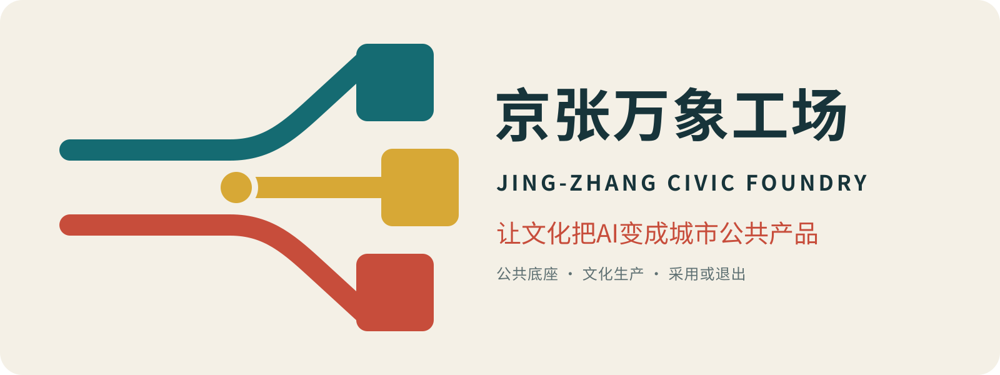

CENTENNIAL JING-ZHANG AI INNOVATION BELT · V6.0
京张万象工场
文化生产驱动的AI公共产品转化带
让文化把AI变成城市公共产品
不是在公园里再建一个AI园区，而是在约9公里既有公共绿廊上建立城市转化能力：真实问题被委托、文化语境与权利被校准、样机被共同制作、风险被分级验证、公众使用决定采用或退出。
一项真实委托 · 一件公共样机 · 一年采用或退出。技术退出后，通行、绿荫、无障碍和人工服务仍完整。

DIRECT TASKBOOK RESPONSE
3定位 + 5功能 + 3区2翼，合成一条供需回路
任务书要求不藏在矩阵里。文化带提供可核验语境，生活体验带检验真实使用，融合创新带完成研发—生产—验证—采用；三区负责不同风险阶段，两翼输入能力与真实问题。
百年京张文化带
史实、地方知识、当代转译、AI生成分层；错误可更正。
都市AI生活体验带
有人值守、可拒绝、非数字备份；不参加测试也能完整使用城市。
AI融合创新带
科研、创作、验证、首发、十二个月采用与退出形成闭环。

FIVE-LAYER SPATIAL DECISION METHOD
经典方法不占正文：精髓变成五道空间闸门
每个节点依次回答生活是否被保护、城市是否读得懂、生态是否适宜、五分钟体验是否成立、构件能否小步试错并恢复；任何一层失败，就缩小、移动或取消。
L1 日常生活底盘
工作日/周末 × 早/午/晚；混合首层、街道照看、小微经营先成立。
L2 认知骨架
一线、三区两翼、九节点、四地标构成一分钟可说明的心智地图。
L3 生态适宜
水土树热声栖息叠图决定保持安静、修补日常、可逆试验、拒绝建设。
L4 五分钟体验
步速、眼平、遮阴、坐靠、过街、人工求助与退出距离先于建筑形象。
L5 渐进模式
只做能单独试、可复用、可维护、可撤除并被另一社区改写的构件。

ONE LINE · THREE GROUNDS · NINE ROOMS
真实场地上，一条纵向公共底盘制造九道横向交换
纵向连续不等于纵向产业带。九间城市房把西侧人才、IP、资本、算力和专业服务，与东侧社区、生态、照护、交通和公共服务问题接到同一城市首层。
众智园｜静—试—观—退
高技术门槛、低公众暴露；公共观察在外，绿化缓冲居中，受控试验与人工接管在内。
AI原点｜街—廊—庭—坊
日常街道、委托前廊、免费共享院、自愿进入的开放工坊递进。
大钟寺｜站—街—场—厅
轨道到达先接普通街道和社区首层，再到日常台阶，最后才进入低风险首发厅。
CULTURAL PRODUCTION + ORIGINAL IDENTITY
文化不是展陈题材，而是产品生命周期
作者在故宫文创、文化传媒、历史街区、国际艺术交流与文化空间运营中的经验，被转成内容发现、事实校准、共同署名、权利许可、品牌边界、场景经营、长期采用与公共回投，不写成个人履历或既有合作背书。

百年京张工程文化
史实链接来源与复核人；遗存本体先于当代解释，未知明确写未知。
中关村开放创新文化
问题、共同作者、版本、失败与下一位维护者同样被看见。
AI新文化
用途、数据、风险、人类责任、拒绝与退出一起成为城市视觉。
FIVE REGIONAL INTERFACES
京张做转化接口，不与其他创新区争同一块牌子
北纬社区
生活问题 → 有受益者与非AI基线的城市委托
未来科学城
前沿研发 → 有语境、有公众解释的城市验证包
怀柔科学城
科学知识 → 可核验、可更正的公共文化产品
经开区
机器人与制造 → 有维护、接管和退出的服务组件
五个接口均为待相关主体确认的概念机制，不表示已有合作、投资、采购、政策或数据共享安排。
CIVIC PROTOTYPE YEAR · DELIVERY
每一季留下可继续工作的证据
春季城市出题、初夏共同造样、盛夏受控试场、秋季城市首发、冬季采用/退出公示。活动不是泛AI大会；每一季必须留下委托书、权利包、测试报告、服务路径或退出记录。
100天补数据、定规则、选三项真实委托
6包底图、公共地坪、责任链、三区样机、文化生产、采用回投
12月复用、任务、信任、成本、可迁移
3项钱建设资金 + 年度运维 + 退出准备金
正式提交内容索引
三层范围
43.6km²网络、11.4km²走廊、三处原型。
任务覆盖
三定位、五功能、三区两翼、agent.1—6。
11.41 km²临时范围复算 / site_area_sqm
11.0%概念蓝绿union / green_ratio
0.8%场景公共空间union / public_space_ratio
12城市委托 / scenario_count
当前总体与重点区几何仍为 provisional，official_boundary=false。不得把图面当作官方红线、精确面积、控规、权属、文保、道路或工程依据；官方polygon发布后须整包重算。